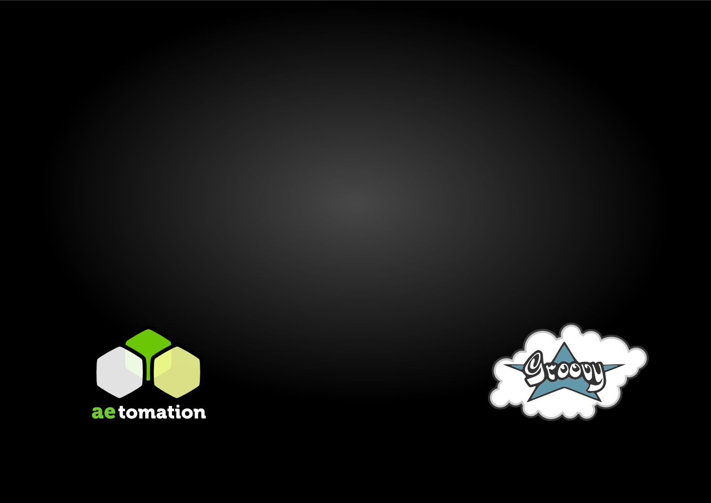
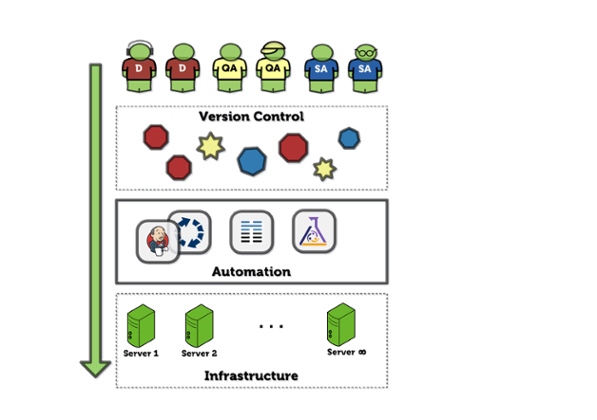

Groovy DevOps in the Cloud

What's this presentation about?
Our take on:
DevOps
Software Provisioning
Continuous Integration
Continuous Delivery
Developers + Operations = ?
Automate the provisioning and maintenance of servers:
Build from source control
Utilize Open Source tools
Ensure testability
Configuration propagation

Building a DevOps toolkit
Automation is key
We are JVM hackers
Fragmented ecosystem
Full-stack approach
Remote command execution
File uploading/downloading
Tunneling
remoteSession {
url = 'user2:654321@localhost:2222'
exec 'rm -rf /tmp/*'
exec 'touch /var/lock/my.pid'
remoteFile('/var/my.conf').text = "enabled=true"
}
remoteSession {
scp {
from { localDir "$buildDir/application" }
into { remoteDir '/var/bea/domain/application' }
}
}
def result = exec(command: '/usr/bin/mycmd',
failOnError: false, showOutput: false)
if (result.exitStatus == 1) {
result.output.eachLine { line ->
if (line.contains('WARNING')) {
throw new RuntimeException("Warning!!!")
}
}
}
Groovy is perfect choice for scriptingVery mature, concise syntax
Extremely easy to produce DSL
We wrote a book about it!
More mature than competition
Large community
Ruby-based DSL
No need to learn Ruby ;)
De-facto standard
Stable
There is a plugin for that!
task uploadModules << {
remoteSession {
exec 'rm -rf /tmp/repo.zip'
scp {
from { localFile "${buildDir}/repo.zip" }
into { remoteDir "/root" }
}
...
...
exec 'rm -rf /etc/puppet/modules'
exec 'unzip /tmp/repo.zip -d /etc/puppet/modules'
}
}
task puppetApply(dependsOn: uploadModules) << {
remoteSession {
scp {
from { localFile "${buildDir}/setup.pp" }
into { remoteDir "/tmp" }
}
exec 'puppet apply /tmp/setup.pp'
}
}
We started developing complex Puppet modules
Modules needs proper testing
...on different platforms
How to test this stuff?
How to reuse a JUnit approach to testing?
We wanted things to be SIMPLE!
Simple testing tool for verifying remote server state
Uses sshoogr and JUnit
Reuse reporting features of JUnit and Jenkins
As simple as ...
class DerbyInstallTest
extends BasePuppetIntegrationTest {
@Before
void installDerby() {
apply("include derby")
}
...
}
@Test
def void ensureDerbyRunning() {
command('service derby status > derbystatus.log')
assertTrue fileText("/root/derbystatus.log")
.contains('Derby')
assertTrue fileText("/root/derbystatus.log")
.contains('is running.')
}
@Test
def void ensureCanConnect() {
Thread.sleep(10000)
uploadScript()
command('/opt/derby/db-derby-10.9.1.0-bin/bin/ij ' +
'testDataScript.sql > derbytest.log')
...
...
// Check if the log of the insert
// operation contains the word ERROR.
assertFalse(
"The script should returne at least one error",
fileText("/root/derbytest.log")
.contains('ERROR')
)
...
...
// Check on data that was inserted into a table.
assertTrue(
"The log should contain a SELECT result",
fileText("/root/derbytest.log")
.contains('Grand Ave.')
)
}
How do we test on different OS?
How do we run parallel tests on multiple architectures?
How do we avoid selling our houses?
Mature
Great API
Virtual hardware variety
OS variety
Groovy based API for interacting with EC2Integrates with the rest of the stack
task startInstance(type: StartInstance) {
keyName 'cloud-do'
securityGroup 'cloud-do'
instanceName 'gramazon/cloud-do'
stateFileName 'cloud-do.json'
ami 'ami-6f07e418'
instanceType 't1.micro'
waitForStart true
}
task terminateInstance(type: TerminateInstance) {
stateFileName 'cloud-do.json'
}
Name
Compute Units
Memory
Hourly Cost
t1.micro
2
0.60 GB
$0.02
m1.small
1
1.70 GB
$0.06
c1.medium
5
1.70 GB
$0.14
m1.medium
2
3.75 GB
$0.12
m1.large
4
7.50 GB
$0.24
c1.xlarge
20
7.00 GB
$0.58
m3.xlarge
13
15.00 GB
$0.50
750 hours of Amazon EC2 Linux Micro Instance usage (613 MB of memory and 32-bit and 64-bit platform support)
Enough hours to run continuously each month
Host operating system
Individual SSH keyed logins
All accesses logged and audited
Customer-generated keypairs
Stateful firewall
Mandatory inbound firewall, default deny mode
Signed API Calls
Require X.509 certificate or secret AWS key
A tool for building images
Inspired by Packer
Reuse your existing Java knowledge
...to build a bridge between DEVs and OPs
Reuse development best practices for OPs
Don't be afraid to try new technologies
Automate!